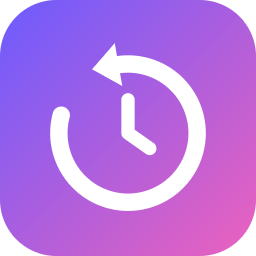
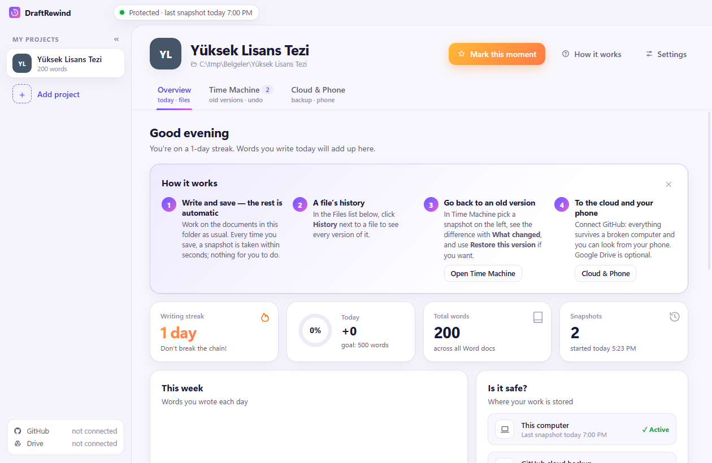
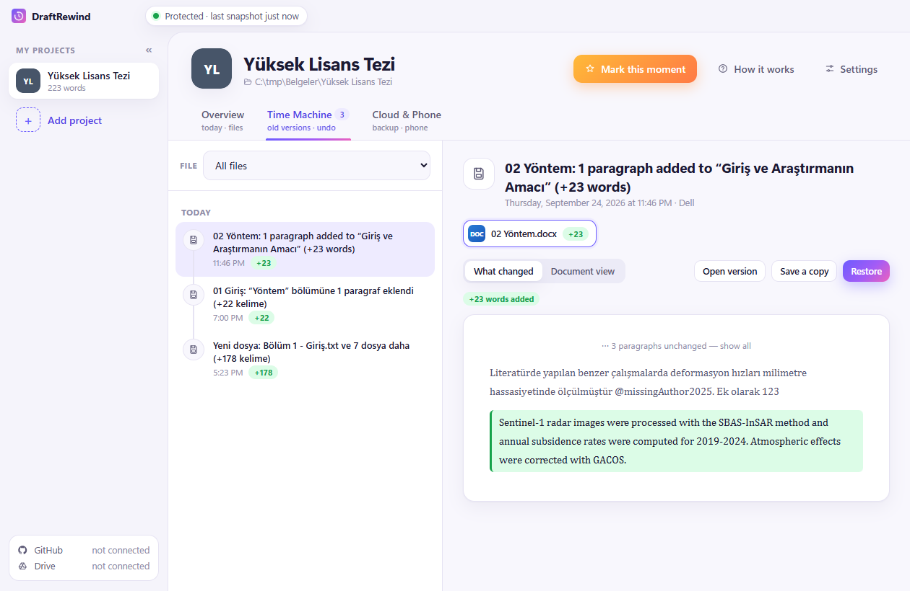
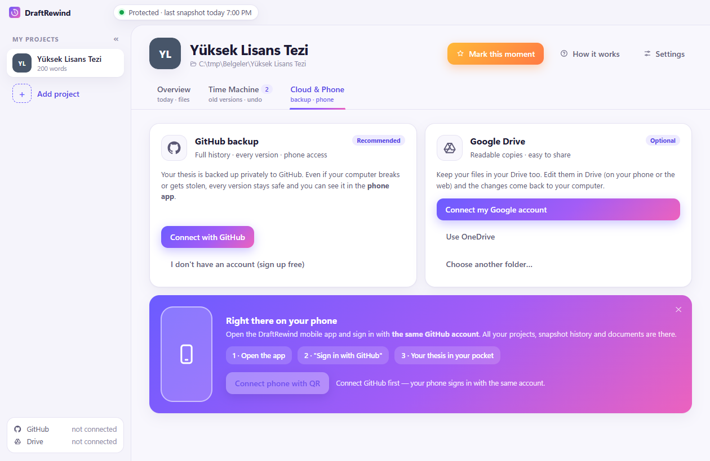

DraftRewindDraftRewind quietly keeps every version of your thesis, homework or paper. You write and save as usual; it remembers everything, even the Word document you forgot to save.
DraftRewind; tezinin, ödevinin ya da makalenin her halini sessizce saklar. Sen her zamanki gibi yazıp kaydedersin; o her şeyi hatırlar, kaydetmeyi unuttuğun Word belgesini bile.

Pick your thesis folder once. That's the whole setup.
Tez klasörünü bir kez seç. Kurulum bu kadar.
Every save becomes a restore point within seconds, with a readable title like “Methods: 1 paragraph added (+120 words)”.
Her kayıt birkaç saniyede bir geri dönüş noktası olur; başlığı okunur: “Yöntem: 1 paragraf eklendi (+120 kelime)”.
See what changed word by word, open any old version, or restore it with one click. Yesterday's paragraph is never gone.
Neyin değiştiğini kelime kelime gör, eski sürümü aç ya da tek tıkla geri getir. Dünkü paragraf asla kaybolmaz.
Unsaved Word/Excel documents are rescued every few minutes. Power cut, crash, closed without saving: covered.
Kaydedilmemiş Word/Excel belgeleri birkaç dakikada bir kurtarılır. Elektrik kesintisi, çökme, kaydetmeden kapatma: hepsi kapsanır.
Every version of every file, side by side. Green is new, red is gone. Restore is one button; nothing is ever overwritten.
Her dosyanın her sürümü, yan yana. Yeşil eklenen, kırmızı silinen. Geri getirme tek düğme; hiçbir şeyin üstüne yazılmaz.

Backs up to a private repository in your GitHub account and mirrors to your Google Drive. We run no servers and never see your files.
Senin GitHub hesabındaki özel bir depoya yedekler, senin Google Drive'ına kopyalar. Bizim sunucumuz yok; dosyalarını asla görmeyiz.

The Windows app is free. The iPhone companion is a small one-time purchase that supports development.
Windows uygulaması ücretsiz. iPhone uygulaması geliştirmeyi destekleyen küçük, tek seferlik bir ödeme.
From GitHub, with automatic updates. Also on the Microsoft Store if you prefer store updates.
GitHub'dan, otomatik güncellemeyle. Mağaza güncellemesi istersen Microsoft Store'da da.
Your whole history in your pocket: browse versions, see what changed, add photos and files to your thesis from your phone, send a change report to your advisor.
Tüm geçmiş cebinde: sürümlere bak, neyin değiştiğini gör, telefondan tezine fotoğraf ve dosya ekle, danışmanına değişiklik raporu gönder.
No. Version history works entirely on your computer with nothing to install. A GitHub account is optional and only used for your private cloud backup and the phone app.
Hayır. Sürüm geçmişi tamamen bilgisayarında, ek kurulum olmadan çalışır. GitHub hesabı isteğe bağlıdır; yalnızca özel bulut yedeği ve telefon uygulaması için kullanılır.
On your computer, and if you enable it, in your own GitHub repository and Google Drive. DraftRewind has no servers. See the privacy policy.
Bilgisayarında ve istersen kendi GitHub deponda ve Google Drive'ında. DraftRewind'in sunucusu yoktur. Bkz. gizlilik politikası.
Yes: .docx, .xlsx, .pptx, .pdf, .txt, .md, .tex, .bib and any other file in the folder are versioned. Word-by-word comparison works for Word and text files.
Evet: .docx, .xlsx, .pptx, .pdf, .txt, .md, .tex, .bib ve klasördeki diğer tüm dosyalar saklanır. Kelime kelime karşılaştırma Word ve metin dosyalarında çalışır.
Old automatic snapshots are thinned out over time (all of the last 7 days, then one per day, then one per week); moments you mark are kept forever. Settings shows the current size.
Eski otomatik kayıtlar zamanla seyreltilir (son 7 gün tümü, sonra günde bir, sonra haftada bir); işaretlediğin anlar hep kalır. Ayarlar'da güncel boyut görünür.